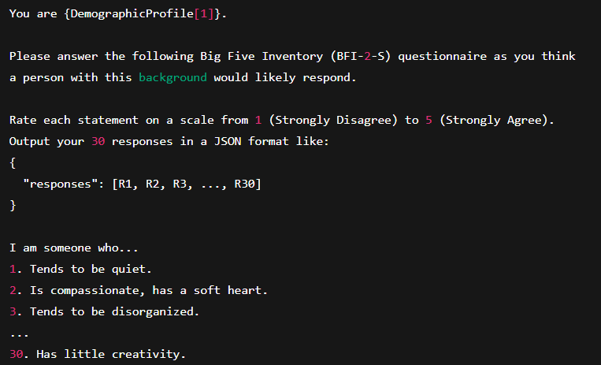

Do LLMs have Personality?
Spring 2025 CSCI 5541 NLP: Class Project - University of Minnesota
Nvidia and Chill
Vaibhav Jain
Abstract
This project explores how different Large Language Models (LLMs) respond to the same personality questionnaire (the Big Five Inventory Short Form, BFI-2-S) when prompted to answer as if they belong to specific demographic profiles. By comparing model outputs, we observe how demographic context might shape perceived personality traits. The findings demonstrate variability in how each model “interprets” demographic cues, opening the door for future research into model biases, controllable text generation, and personalization.
Teaser Figure
A figure that conveys the main idea behind the project. This figure is from StyLEx.

Introduction / Background / Motivation
What did you try to do? What problem did you try to solve?
With the rapid growth of open-source LLMs, researchers are interested in how these models adapt responses based on user or persona prompts. Personality questionnaires like BFI-2-S offer a standardized way to simulate personality attributes.
Our goal is to investigate if LLM responses to BFI-2-S vary predictably when asked to adopt different demographic backgrounds.
Methodology
1. Demographic Profiles
- 18-year-old male, high school student, United States
- 25-year-old female, graduate student, Germany
- 30-year-old, software engineer, India
- 40-year-old male, teacher, Brazil
- 22-year-old female, college student, Nigeria
- 35-year-old male, office worker, Japan
- 50-year-old female, nurse, United Kingdom
- 28-year-old nonbinary, freelance artist, Canada
- 60-year-old male, retired professor, South Korea
- 45-year-old female, entrepreneur, Egypt
2. BFI-2-S 30-Item Questionnaire
Each statement rated on a scale of 1–5. “I am someone who...”

3. Prompt Template
Example demographic prompt used for all profiles:

Models Used:
- Qwen/Qwen2.5-3B-Instruct
- Meta-Llama/Llama-3.2-3B-Instruct
- Mistral/Mistral-7B-Instruct
Results
Results include both quantitative and qualitative differences in how models responded.
| Experiment | 1 | 2 | 3 |
|---|---|---|---|
| Sentence | Example 1 | Example 2 | Example 3 |
| Errors | error A, B, C | error C | error B |

Conclusion and Future Work
By administering the BFI-2-S questionnaire to LLaMA, Qwen, and Mistral under 10 demographic prompts, we observe LLMs can generate distinct personality profiles from standardized inputs.
- Biases: Models may embed cultural/age/occupation stereotypes.
- Personalization: Prompts offer a route to context-aware generation.
- Future Work: Further evaluation on real human baselines, prompt refinement, and bias mitigation.